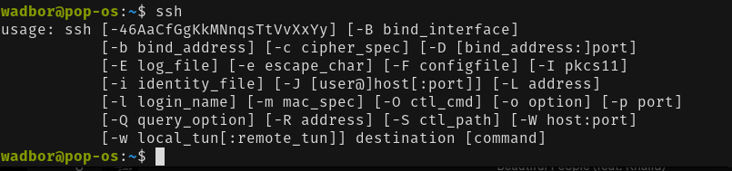
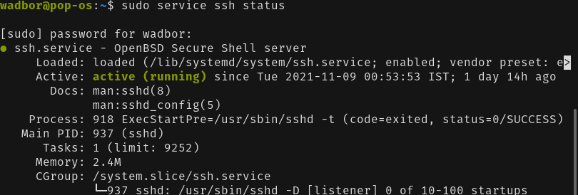
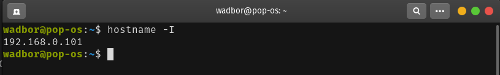
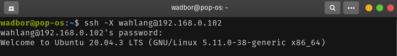
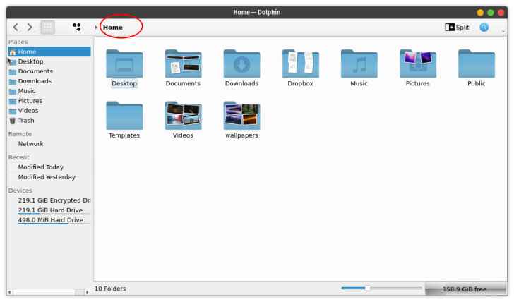
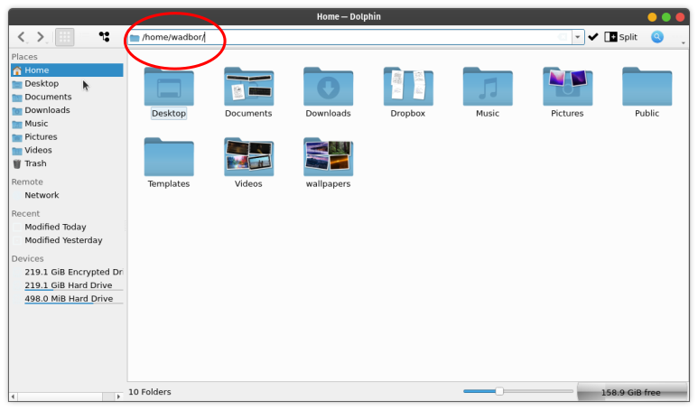

Because I am a linux fan boy, what I will show you will only work on linux and in particular Ubuntu operating system (but it should work more or less the same in other operating systems). If you are like me, and have two PCs and you want to access or control the other PC from anyone of the PCs and also to be able to transfer files without the need to use pendrive or external device, then you have come to the right place.
SSH (Secure Shell or Secure Socket Shell) will do the connection for you and SFTP (SSH File Transfer Protocol) will handle the files transfer (Note: both the pcs should be connected to the same LAN network or WiFi). I will show you how to do this in a step-by-step easy to follow manner.
First if you are in a running PC, open your terminal and type ssh if ssh is installed it should show something like this

Or if not already pre-installed then install with the following command and input your password
sudo apt install openssh-server
Next, run the following command
sudo service ssh status
You should see active and running

Now do the same in the other PC and you are ready to connect, but you need to know the IP address of each PC. In order to determine the PC address type the following command in each PC
hostname -I
You should see something like this

If you are connected with LAN cable and for mobile hotspot you might get extra strings of numbers but only the first strings are important. Now you can connect using ssh with the following command (replace username with your username in other pc and same with the ip address)
ssh -X username@xxx.xxx.xxx.xxx
Enter the other PC password

Now you should be able to see and open files from the terminal which are in the other PC, you should be able open programs as well.
Now let us use FTPS to transfer files between the two PCs. Open your files explorer, I'll show you with Dolphin (KDE default files explorer) and gnome nautilus default file manager
Open file manager and click on the home to bar

You should see your username home directory like this

Replace this directory /home/wadbor/ with sftp://username@ipaddress (For example: sftp://wahlang@192.168.0.102) and hit enter followed by the other Pc your password.
For gnome nautilus open it and click on 'Other Location' and in 'Connect to Server' box enter the same as above.
Enjoy !